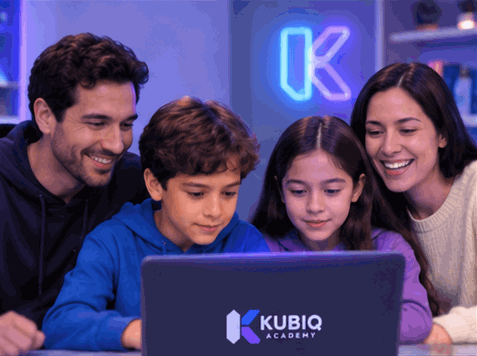

01
Observamos habilidades
Cómo comprende los conceptos, organiza ideas, utiliza herramientas y resuelve desafíos propios de su nivel.
El progreso no se mide solo por terminar clases. Se observa en las ideas que desarrolla, los problemas que resuelve y los proyectos que logra construir y mejorar.
A lo largo del programa, el docente observa el trabajo del estudiante y utiliza sus actividades y proyectos para reconocer avances y orientar los siguientes pasos.
Cómo comprende los conceptos, organiza ideas, utiliza herramientas y resuelve desafíos propios de su nivel.
Los ejercicios y proyectos permiten apreciar cómo aplica lo aprendido, qué decisiones toma y cómo mejora su trabajo.
La retroalimentación docente ayuda a reconocer fortalezas, corregir dificultades y seguir desarrollando autonomía.
El avance se hace visible a través del trabajo realizado por el estudiante, no mediante porcentajes genéricos.

La familia puede conocer los proyectos, conversar sobre lo que el estudiante está creando y recibir orientación sobre su avance. Buscamos que pueda comprender el proceso sin necesitar conocimientos técnicos.
KUBIQ PROGRESS describe nuestro enfoque de seguimiento académico. No es un portal de acceso para estudiantes ni un panel de seguimiento en tiempo real. Los formatos y momentos de comunicación con las familias se explicarán antes de iniciar cada programa.
Agenda una sesión informativa y conversemos sobre el seguimiento, los proyectos y el programa que te interesa.